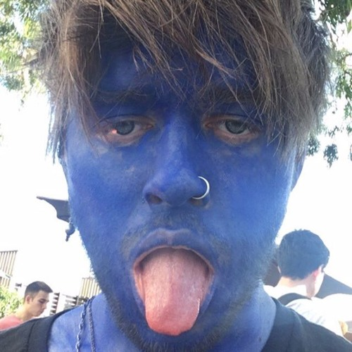
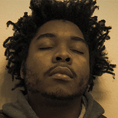
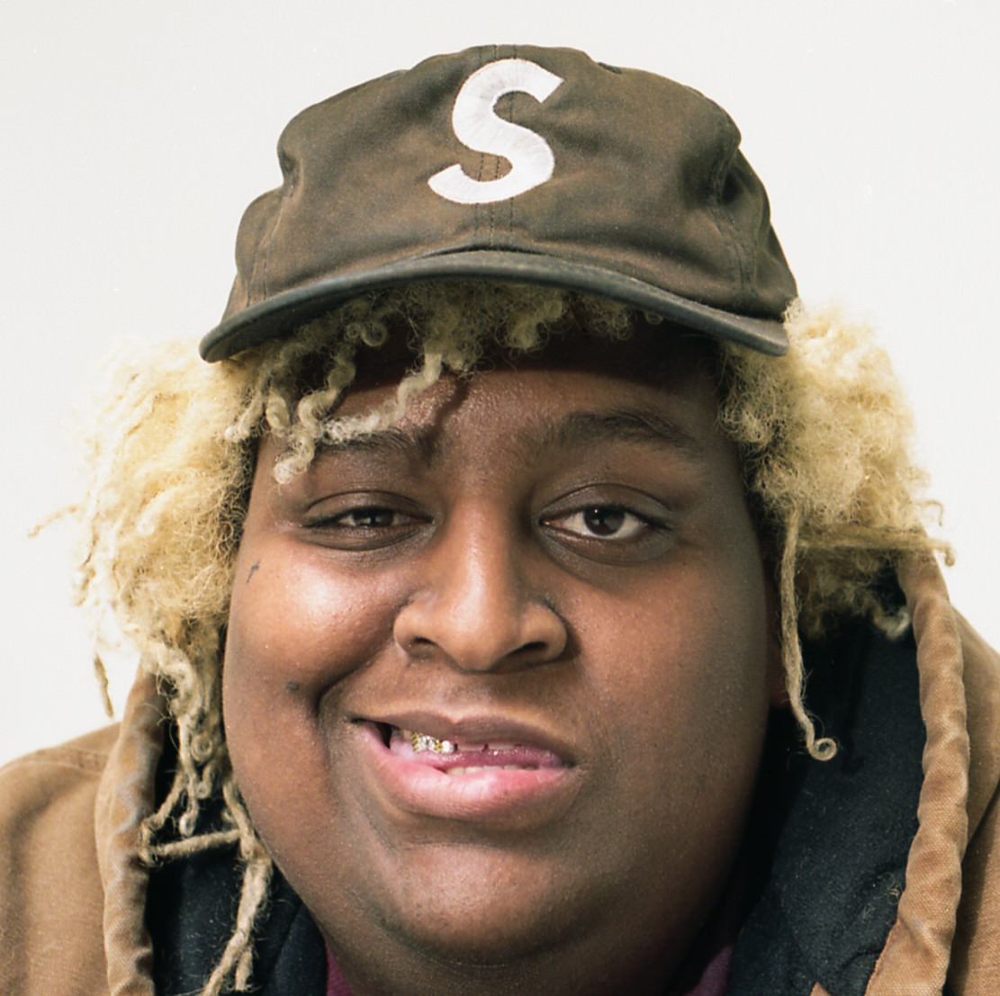
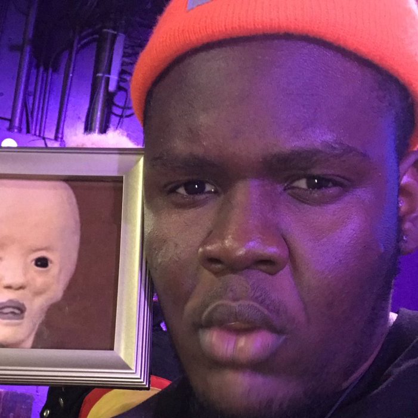
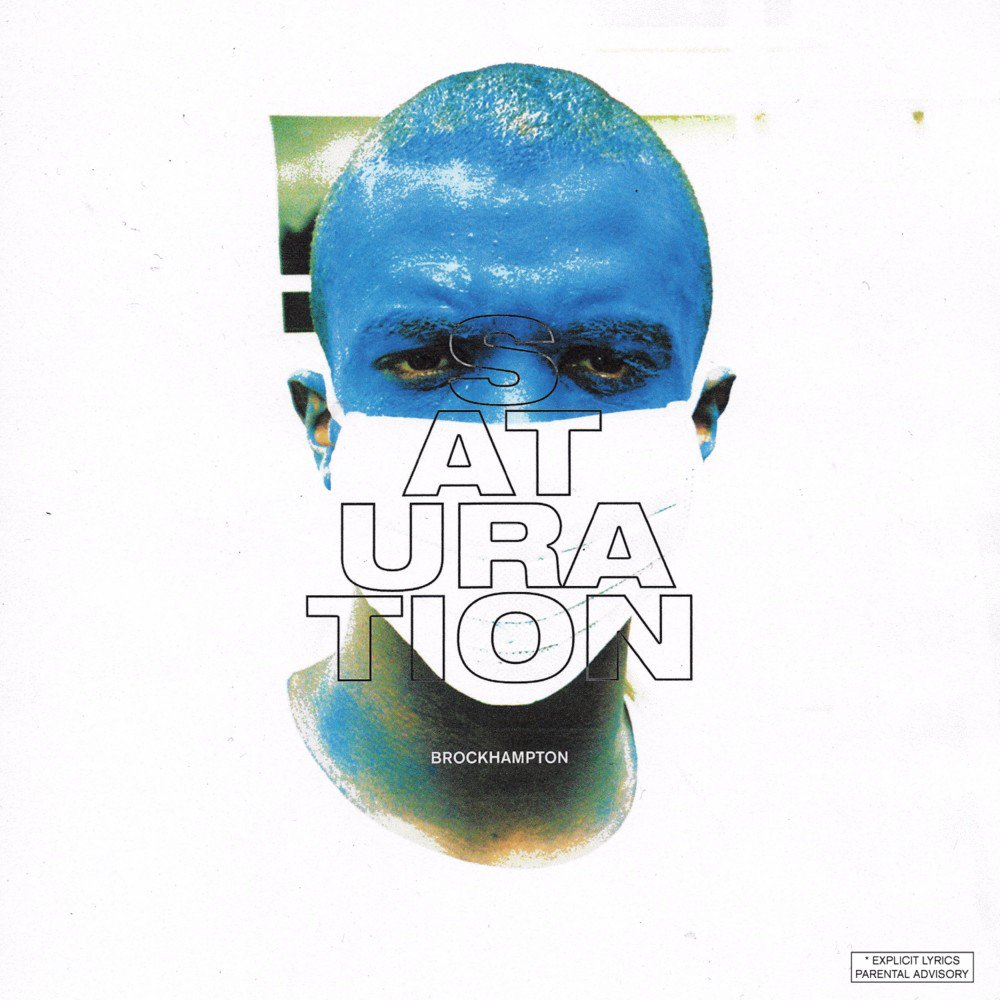
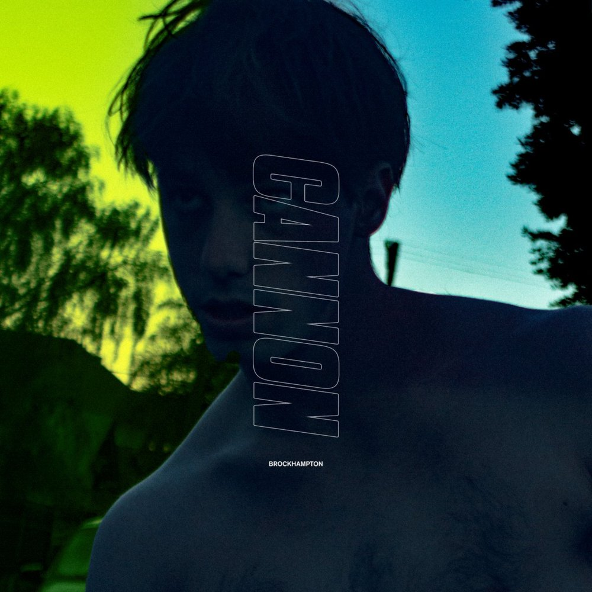

BROCKHAMPTON content
|  |  | |
|---|---|---|
|  |  | |
|
|
|
|
||
| Albert Gordon | Alex Mallis | Alex Russell |
|---|---|---|
| Allan Kingdom | Ameer Vann | Brian Washington |
| Christian Clancy | Craig Marshall | Dijon |
| Franklin Mendez | Froyo Ma | Jade Holman |
| Jaden Walker | Jannie Rayburn | Jazmin Sullivan |
| Jeff Kleinman | Jenny Grossbach | Joel Marsh |
| Kayla Hoff | Kealy O'Donnell | Luis Panch Perez |
| Michael Uzowuru | Milos Mihalaf | Nick Holiday |
| Nick Lenzini | Rex Roemer | Rodney Tenor |
| Rome Gomez | serpentwithfeet | slowthai |
| Spencer Ford | ||
 |
 |  |
 |
 |
|---|---|---|---|---|
 |
 |
 |
 | |
 |
 |